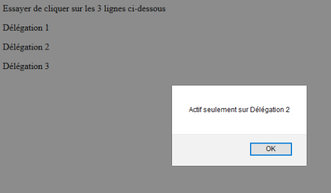

Selon les besoins de notre application et les fonctionnalités que nous aurons à développer, nous devons ajouter ou supprimer des événements. Nous allons voir quelles méthodes JavaScript sont à votre disposition pour manipuler des événements.
Pour créer un événement sur un élément du DOM, il faut commencer par cibler cet élément. Comme nous l'avons vu, des méthodes sont disponibles sur l'objet document, appelées des sélecteurs.
Ces 4 méthodes sont performantes mais limitées avec des pages ou applications complexes. Elles se révèlent peu souples car nécessitent de faire appel à des boucles, diverses opérations algorithmiques et des filtres sur les résultats obtenus pour pouvoir obtenir une liste d'éléments.
Avec deux nouvelles fonctions introduites par l'API Selectors, la syntaxe permet de faire appel aux sélecteurs CSS. On applique en général ces deux méthodes à partir de la racine document.
Méthode la plus recommandée
Méthode la moins recommandée:
Le type de retour est une NodeList, qui est vide si rien n'est trouvé.
Les sélecteurs vont nous permettre de sélectionner un ou plusieurs éléments du DOM. Il doivent être utilisés sur l'objet JavaScript document, qui est le point d'entrée de notre page web.
See the Pen Untitled by OpenSpirit (@OpenSpirit) on CodePen.
Nous pouvons également enchaîner les sélecteurs :
See the Pen Untitled by OpenSpirit (@OpenSpirit) on CodePen.
Une fois notre élément de DOM sélectionné, nous pouvons appeler la méthode addEventListener() pour lui lier un événement. Comme nous l'avons vu, cette méthode prend généralement deux paramètres : le type d'événement et une fonction, qui sera appelée au moment du déclenchement de cet événement.
See the Pen Untitled by OpenSpirit (@OpenSpirit) on CodePen.
Paramètres obligatoires :
Paramètres facultatifs :
Nous pouvons supprimer un événement en invoquant la fonction removeEventListener().
Supprimer un eventListener quand on en a plus besoin est une excellente pratique, car il peut être coûteux pour le navigateur qui doit observer un nœud de DOM supplémentaire.
Nous devinerons aisément que, plus il y a d'éléments à charger dans le DOM, plus notre page web sera lente à s'afficher.
See the Pen Untitled by OpenSpirit (@OpenSpirit) on CodePen.
À noter que removeEventListener prend les mêmes paramètres que la fonction d'ajout. Pour réaliser la suppression, les paramètres type et listener doivent obligatoirement être identiques à la création et à la suppression.
See the Pen Untitled by OpenSpirit (@OpenSpirit) on CodePen.
La délégation d'événement est une pratique consistant à lier un événement non pas sur l'élément ciblé, mais sur l'un de ses ancêtres. La délégation est très utile dans le cas où nous souhaitons lier un événement sur un élément de DOM qui n'existe pas encore au moment du chargement de la page, comme par exemple un bouton qui serait ajouté dynamiquement au DOM par une action de script. Créer un événement sur cet élément à l'aide de addEventListener au chargement de la page ne fonctionnera pas. Il est alors nécessaire de modifier la syntaxe de addEventListener pour créer une délégation.
See the Pen Untitled by OpenSpirit (@OpenSpirit) on CodePen.
Si nous plaçons un événement click sur la div, le clic sur le texte du paragraphe <p> déclenchera l'événement, bien que ce dernier cache la div. Ceci est rendu possible grâce à la délégation d'événement.
Imaginons que l'on souhaite définir un événement en cliquant sur l'un des paragraphes de la div. Au lieu de lier autant d'événements que de <p>, nous pourrons n'en définir qu'un seul et le placer directement sur la div.
La propriété target obtient l'élément sur lequel l'événement s'est produit à l'origine.
See the Pen Untitled by OpenSpirit (@OpenSpirit) on CodePen.
See the Pen Untitled by OpenSpirit (@OpenSpirit) on CodePen.